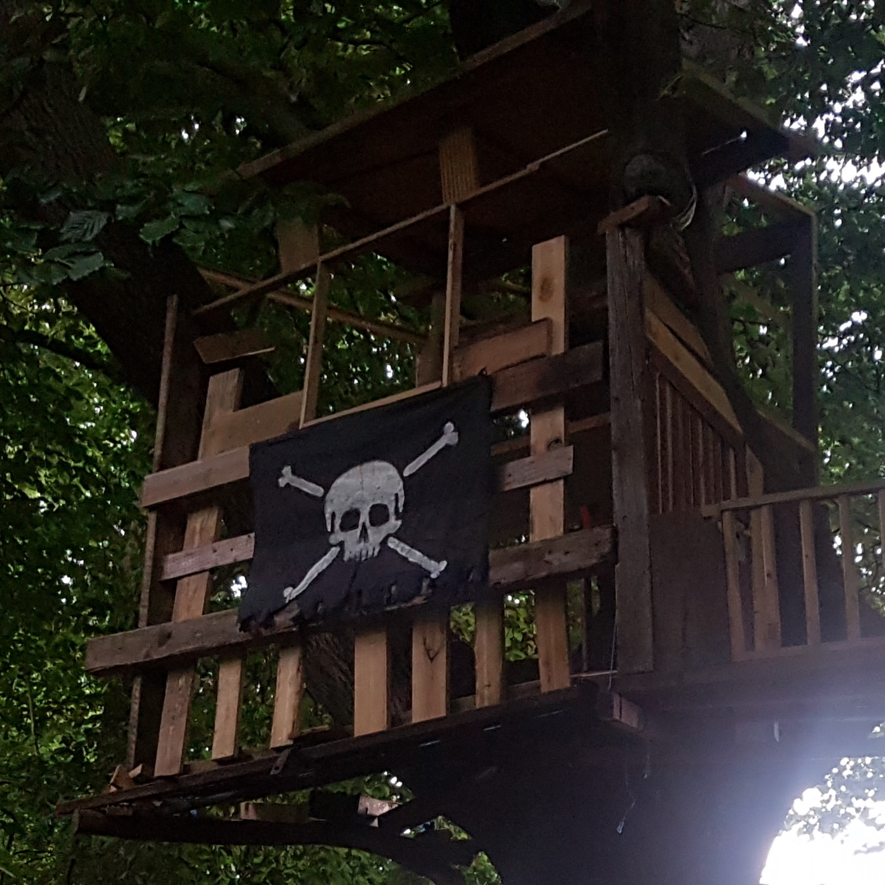
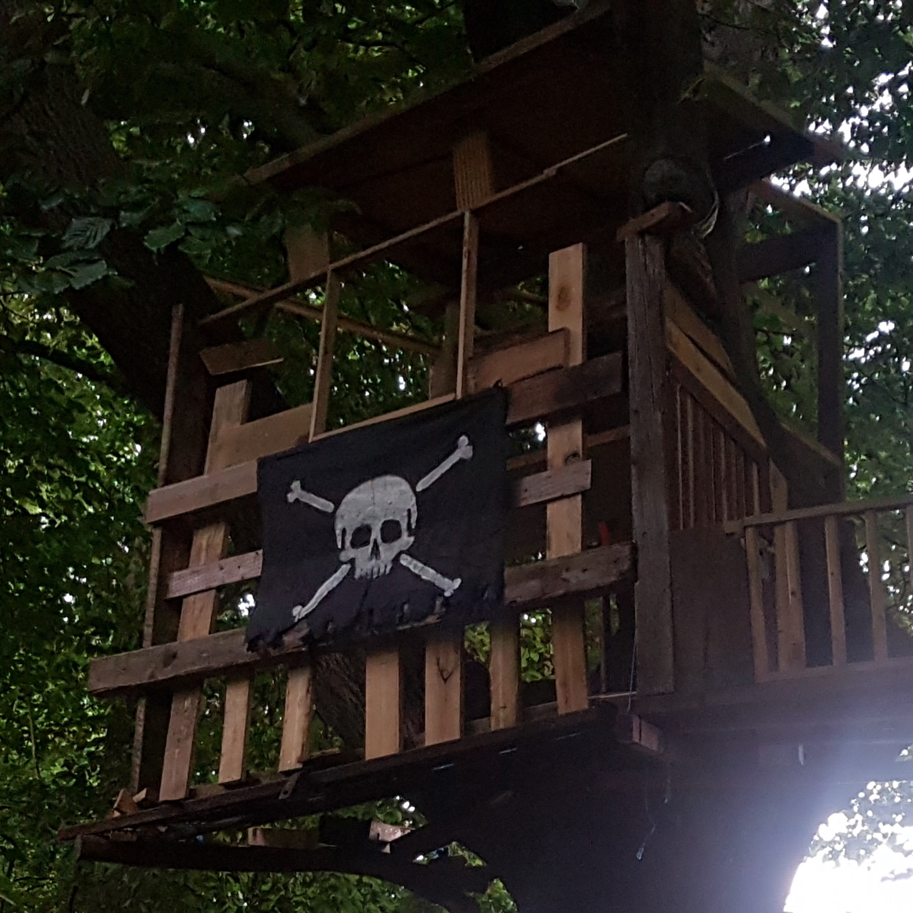

Below you will see some of the projects I have been working on. Each of these projects are either in progress, complete or have ended for one reason or another.
Roger's hideout [Image 1] was my first serious project. It was a somewhat large multi-storey treehouse which had it's own power system. Building it taught me a lot about structural design and to this day I find that knowledge invaluble. The project was documented in full detail in this video: Roger's Hideout - YouTube
Construction started on the 30th of June in 2021. I started working on it during some of the first time I went out alone. I was inspired by my memories of being a kid; I would build little huts out of sticks and I always wished I could make something bigger. I started by hammering small logs into place to make a ladder. Soon after, my friend from college (Charlie) tagged along and with my structural design knowledge and him to help me lift things into the tree and supply materials, we got the main structural parts complete and stable in the first couple months.
At this stage, it was time to decide how the treehouse will progress and after some designs, we got the framework for the walls installed [Image 2]. From this point, the progress was so fast, after another couple months of work, we had power, walls and we camped in the treehouse many times too. Even during the stormy nights we stayed, we were mostly dry. I would go on to learn from my mistakes in my next projects to make safer and waterproof structures.
Towards the end of Roger's Hideouts' life, it was discovered by people who repetedly vandalised the treehouse. Becaise of this, I decided we needed to relocate. I removed anything breakable or valuable and it sat abandoned for ages. I scheduled it for demolition and on the 18th December 2021, my friends gasther around and I tore it down. In less than an hour, months of work were turned to a pile. I spend the next few days moving all of this wood from that spot to a new location for the next project.
Thanks for reading, I hope you found this interesting and enjoyed reading! Feel free to have a look at my other projects.
 Image 2

Image 2

Fort Sierra started almost instantly after the demolition of Roger's Hideout. During the construction of this treehouse, I used the knowledge gained from my mistakes in Roger's Hideout and was able to build a three story treehouse with power. This project was documented in this video: Fort Sierra - YouTube
Fort Sierra was named after an abandoned car I found. The car in question was a Ford Sierra. I changed the "d" at the end of "Ford" and the name "Fort Sierra" was created. My original idea was to have the car be integrated into the treehouse as an electrical management room. I was planning to have the treehouse finished by the summer so we could decorate it and it would act as a summer cabin for "glamping".
Directly after Roger's Hideout was demolished, I spend a week dragging all of the materials to the new location and started construction on the new treehouse. Charlie helped out in the very early stages with his daredevel climbing skills to install the main structural beams. After getting them installed, the progress was very fast. After a few weeks, the first floor was finished and before we knew it, I had the lights, windows and the second floor done.
Unfortunately, this treehouse met the same fate. It was discovered again and vandalised. This was because I couldn't carry all of the materials far enough. People were able to hear my building and came to investigate. Soon, lots of people know about it and it was ruined. One night, people broke in and stole all of my tools which put me in a really bad mood. I cleared out the treehouse and it sat abandoned for a few weeks. It was also demolished by me and my friends. The materials were moved to a secret location for a new project. (Available only on patreon)
Thanks for reading, I hope you found this interesting and enjoyed reading! Feel free to have a look at my other projects.
 Image 2
Image 2

The Motus Merlin is an ongoing project (Last updated 22/NOV/2023), originally, it was not going to be kept. I was planning to use it to move my treehouse materials to a new location. When everything was moved, I was going to integrate it into the next treehouse. During the development, I realised I am not going to be able to make a new treehouse any time soon and the Merlin started to live on borrowed time. This project was documented in this video: Motus Merlin - YouTube
The Motus Merlin started as a fully wooden construction. The Chassis was wooden, steering mechanism was wooden and I made the first version all with basic hand tools. It was originally a pickup truck but I later changed the design in favour of the convertible. I bought an engine from Ebay for £50 and restored it. The merlin first drove without a clutch, chain or belt. It simply had a wooden wheel on the engine's crankshaft rubbing on the tire; making the tire spin. The car needed to be pushed for the engine to start and the engine had to be stwitched off to stop the car.
After realising that the Merlin was the only project I would be able to do for a while, I became invested in it. I replaced the wooden shassis with a new steel chassis I made [Image 2] and I set up a belt-tensioner clutch mechanism. This mechanism did not work with this car at all but it was an upgrade from before. After reaching speeds of around 30mph, I started making the car stronger, safer and eventually got tired of the belt tensioner mechansim. I threw some money at it and invested in a CVT torque-converter and rebuilt the entire drivetrain of the car.
As of now, the car has a lighting system in progress but currently the headlights work. The car is fully automatic now, press throttle and you get around 200nm of torque to the wheel to set off (Which is a lot for a car that weight 220KG including the driver!). During the development of the Merlin, I changed the pickup truck style body for a vintage 1960's convertible style.
Thanks for reading, I hope you found this interesting and enjoyed reading! Feel free to have a look at my other projects.
 Image 2
Image 2